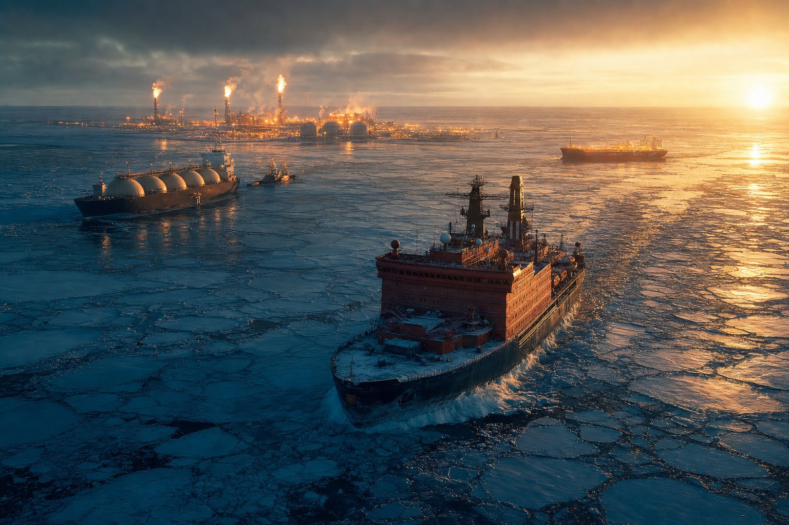
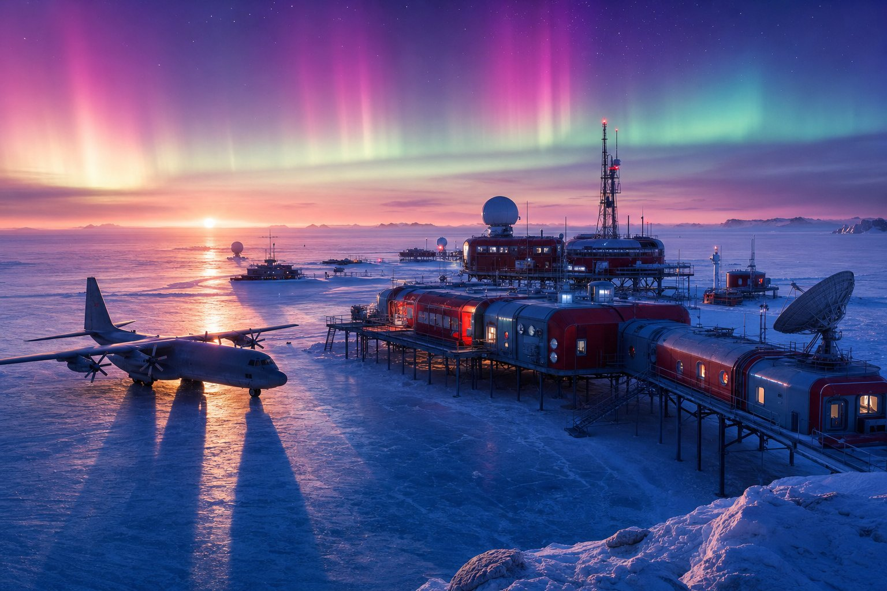
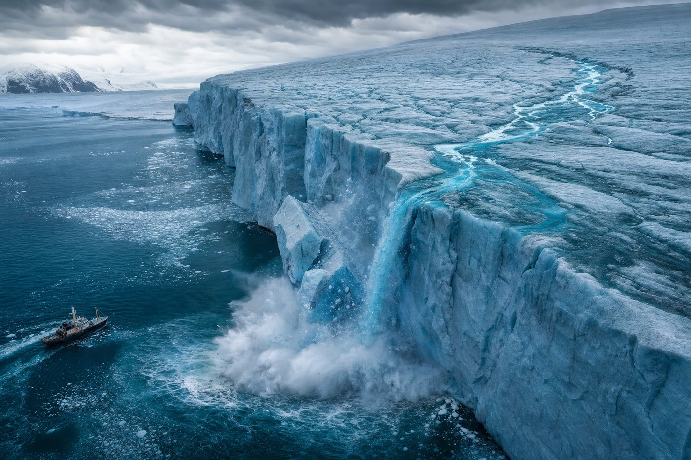
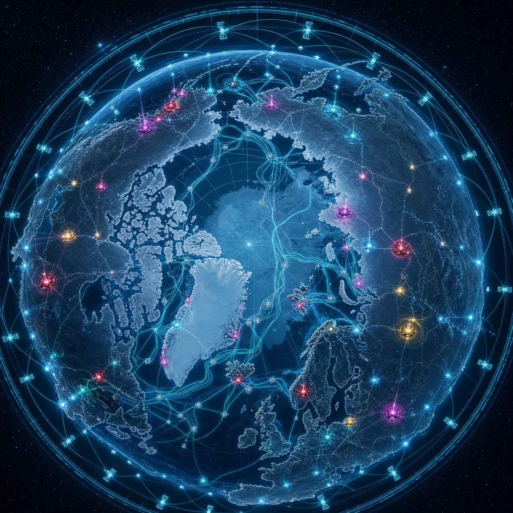

Если посмотреть на Землю сверху и снизу, через два полюса, обнаружится удивительная симметрия. На севере — покрытый льдом океан, окружённый восемью арктическими государствами и их исключительными экономическими зонами. На юге — континент площадью 14 млн км², который с 1959 года юридически не принадлежит никому и управляется международным договором. На первый взгляд — два разных мира. Но стоит сравнить, какие державы и зачем туда сегодня идут — и различия стираются.
В период 2026–2046 годов оба полюса превращаются в стратегические фронты глобальной конкуренции за ресурсы, маршруты, технологии и статус. Эта статья — сжатый обзор двух «полярных партий» и того, что их объединяет.
01 Арктика: 90 млрд баррелей нефти и маршрут будущего

По оценкам Геологической службы США, Арктика хранит до 13 % неоткрытых мировых запасов нефти и около 30 % — природного газа, плюс редкоземельные металлы, без которых не собрать ни одного электромобиля и ни одной ветроустановки.
Россия делает ставку на Северный морской путь. Грузопоток в 2024 году превысил 37 млн тонн — официальная цель: 150–200 млн к 2030‑му. В строю — семь атомных ледоколов проекта 22220, идёт строительство сверхмощного «Лидера» проекта 10510 (120 МВт). США в ответ перезагружают командование NORTHCOM и давят на Гренландию — вплоть до разговоров о «сделке века» с Данией. Китай продвигает «Полярный шёлковый путь», в 2025 году ввёл в строй ледокол «Сюэлун 2» нового поколения. Канада объявила военно-арктические инвестиции на 81,8 млрд CAD до 2035‑го. Норвегия и Финляндия согласовали приём наземных сил НАТО на северном фланге.
Арктика — это территория с понятным правом: UNCLOS, Арктический совет, нацзаконодательства. Но именно поэтому здесь конкуренция идёт жёстко и по понятным правилам: суверенитет, шельф, маршруты, базы.
02 Антарктида: договор, который истекает в 2048‑м

Антарктический договор 1959 года заморозил территориальные претензии и запретил военную деятельность, а Мадридский протокол 1991 года добавил мораторий на добычу полезных ископаемых — до 2048 года. Но вокруг этой даты уже выстраиваются стратегии.
Китай в 2026 году заканчивает свою пятую станцию — «Циньлин» в море Росса, плюс развёртывает наземную станцию системы BeiDou — то есть получает в Антарктиде точку космической инфраструктуры двойного назначения. Россия модернизирует «Восток» (три новых зимовочных модуля сданы в 2025‑м) и открыла новую взлётную полосу на станции «Прогресс». США оперируют крупнейшей станцией Мак‑Мердо, но борются с сокращением бюджета NSF. Турция строит станцию TARS, Иран заявляет о планах постоянного присутствия, Индия проводит уже 45‑ю антарктическую экспедицию.
Под слоем академической риторики о «науке для всего человечества» идёт разметка позиций к возможному пересмотру режима после 2048. По оценкам, континент может содержать сотни миллиардов баррелей углеводородов, крупнейшие в мире запасы пресной воды (около 70 %) и редкоземельные элементы.
03 Климат: главный соавтор этой гонки

Без климатических изменений никакой полярной гонки в её сегодняшнем виде бы не было. По данным NASA и NOAA, арктическое лето может стать практически безлёдным уже к 2030‑м — на десятилетия раньше прежних оценок. Это меняет навигацию: Северный морской путь становится круглогодичным, Северо-Западный проход открывается на месяцы дольше.
На юге всё драматичнее. Антарктида теряет около 135 млрд тонн льда ежегодно, ускоряется деградация ледников Туэйтса и Пайн‑Айленда, под угрозой — ледовый щит Западной Антарктики. К 2050 году до 70 % колоний императорских пингвинов могут оказаться нежизнеспособными. Парадоксально, но именно эти процессы делают континент «доступнее» для инфраструктурной и ресурсной экспансии.
04 Технологии и инфраструктура: новая полярная гонка

На обоих полюсах одновременно разворачивается одинаковая по логике инфраструктура. Спутниковые группировки: BeiDou и Starlink тянутся в высокие широты, где нужны полярные наземные станции — а их удобнее всего ставить как раз в Антарктиде и Арктике. Дроны и БПЛА: НАТО обсуждает расширение арктического дронового присутствия, в Антарктике активно используются ROV и AUV для подлёдной разведки. Атомная энергетика: плавучие АЭС типа «Академик Ломоносов» для арктических посёлков, проекты малых реакторов для будущих антарктических станций.
Отдельная история — связь и дата-центры. Холодный климат сам по себе превращается в ресурс: естественное охлаждение серверных, прокладка трансарктических оптических кабелей сокращает задержку между Азией, Европой и Северной Америкой. Полюса становятся не окраиной мира, а его коммуникационным центром.
05 Что общего: семь параллелей
- Одни и те же игроки. Россия, США, Китай — три центра тяжести и на севере, и на юге. Плюс региональные средние державы: Канада, Норвегия, Великобритания, Австралия, Индия, Турция, Иран.
- Главные призы похожи. Углеводороды, редкоземы, пресная вода, биоресурсы (рыба и криль), транспортные маршруты, площадки для двойной инфраструктуры.
- Лёд как сцена и как метроном. Климатические изменения одновременно открывают доступ и давят на экосистемы. Чем быстрее тает, тем выше ставки.
- Двойное назначение. Любая «исследовательская» станция или «навигационный» спутник могут при необходимости работать в военной логике. Граница между наукой и разведкой размывается.
- Право под давлением. UNCLOS на севере и Антарктический договор на юге создавались в других геополитических условиях. К 2048 году обе системы будут переписываться — явно или по факту.
- Преимущество раннего хода. Тот, у кого к моменту пересмотра режимов уже стоят станции, ледоколы, спутники и кабели, — получает аргументы, которых нет у остальных.
- Экология как валюта легитимности. Все игроки апеллируют к защите природы — но именно те, кто громче всех говорит об охране, одновременно строят там инфраструктуру. Это новая форма «мягкой силы».
06 Горизонт 2026–2048: к чему готовиться
Ближайшее окно — 2026–2030. В Арктике это запуск «Лидера», расширение СМП, переговоры по Гренландии и первые арктические учения НАТО в новом формате. В Антарктиде — завершение «Циньлин», ввод BeiDou‑станции, запуск турецкой TARS и возможная иранская заявка на постоянное присутствие.
Среднесрочно (2030–2040) разворачивается главное действие: ледоколы нового поколения, плавучие АЭС, постоянные арктические дроновые патрули, антарктические аэродромы для тяжёлых C‑17 и Ил‑76. К 2040‑м оба полюса будут связаны с остальной планетой плотной сетью спутниковой и кабельной инфраструктуры.
А к 2048 году — моменту, когда формально можно поднимать вопрос о пересмотре Мадридского протокола, — на юге будет уже другая физическая реальность: десятки станций, готовая логистика, доказанная способность работать круглый год. И ровно к этому же сроку Арктика превратится в полноценный экономический регион с своей промышленностью, добычей и транспортом.
Арктика и Антарктида — не две разные истории, а два этажа одной и той же стратегии ведущих держав. Кто хочет понимать XXI век — должен читать обе карты одновременно. Полюса перестают быть периферией. Они становятся главной сценой следующего поколения.
На NovaSphere мы продолжим следить за обоими фронтами — от запусков ледоколов до спутниковых станций на ледяном куполе. Подписывайтесь на обновления, чтобы не пропустить ключевые точки этого 20-летнего сюжета.